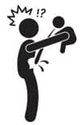

Öğğhhhhh!
Bir annenin omzu, yavruları bebekken kusmuk bulaştırsın, çocukken sümüklerini silsin ve büyüdüklerinde gözyaşlarıyla ıslatsın diyedir.
Annelerin yavruları en rahat besleyebildiği dönem ilk 2 yıl. (E tamam, emzirmek, süt üretmek, mamayı ayarlamak, ek gıdalar falan da sıkıntılı ama dolma doldurmak, mantı yapmak ve karnıyarık pişirmekle kıyaslanamaz herhalde!). Fakat iş beslemekle bitmiyor. İki yudum süt içen yavru, sırtına on beş dakika tokat yiyor.
Neden? Çünkü gaz çıkartıyoruz. O gaz çıkmazsa uyumaz, uyusa da bir süre sonra gaz sancısıyla uyanır. Gaz çıkartmak için -hastanede gösterecekler- bebeği omzuna yaslayıp ritmik hareketlerle sırtına vuruyorsun. Sonunda pısss diye bir kaçak veriyor ve rahatlıyor. Lakin o kaçak sırasında içtiği sütün bir kısmını senin omzuna bırakıyor. İşte bu yüzden daha bebek doğmadan edinmen gereken çok önemli bir şey var: Kusmuk bezi… Kumaşçıdan birkaç metre yumuşak tülbent al, 15cmx15cm ebatlarında kestir ve kenarlarını bir terziye diktir ya da elinden geliyorsa kendin kıvır. Bu bezleri, bebeğin gazını çıkartmadan önce omzuna atarsın omzun kirlenmez. Bebek kusunca ağzını silersin, ıslak mendil ya da peçete görevi görür. Sabahları kaynatılmış suyla ıslatıp bebeğin yüzünü silersin. Sıcak havalarda uyurken başının altına koyarsın yastığı ter olmaz. Uykudan uyanınca sırtına koyarsın terini emer. Uyuturken gözüne örtersin ışık gelmez. En olmadı, bebek uyuyunca parmağına takar halay çekersin… Neyse işte, bebek kusar, omzun lekelenir dikkatli ol, öyle şıkıdım kıyafetle gaz çıkarma, ziyan olur.
Bu kusma hadisesi bazı bebeklerde normalin üstünde seyreder. Bebeğin reflüsü vardır, seni hayatından bezdirir. Yediğini çıkartır.
Doktorunuz reflü için birtakım ilaçlar verir rahatlar. Bebeğe ilaç vermezse anne babasına sakinleştirici, güç kuvvet artırıcı, dirayet şurubu falan verir.
Bazen de bebeğin emdiği süt hakikaten burnundan gelir! Laf değil gerçekmiş… İkizler bebekken çok kusarlar ve çoğu zaman süt burunlarından gelirdi. Bunu ilk yaşadığımızda Mete’yi kaptığımız gibi hastaneye koşmuştuk. Ne oldu? dediler, kustu dedik, burnundan kustu. Bir şey olmaz, besledikten hemen sonra altını almayın, karnı sıkışır ve kusar dediler. O yüzden o günden sonra hep önce altını alıp sonra besledik. Besledikten hemen sonra mutlaka gazını çıkartın dediler, tamam dedik. Beslendikten sonra bir müddet dik tutun dediler, eyvallah dedik. Yatırırken omuzlarından yukarısını hafif yukarda tutun dediler, zaten öyle yapıyorduk. Ama çocuklar gene de zaman zaman burunlarından kustular. Bir tatil için köye gittiğimizde anneanneme çok kusuyor bu çocuklar anneanne dedim, kusan çocuk iyidir, sağlıklıdır dedi. O diyorsa doğrudur. Bir daha panik olmadım, sildim geçtim.
Biraz daha büyüdüklerinde bu masum ve ekşimiş süt kokulu kusmuklar yerini ıspanaklı, havuçlu kusmalara bıraktı ki anlatılacak gibi değil! Ayyy yok vallahi anlatamam…